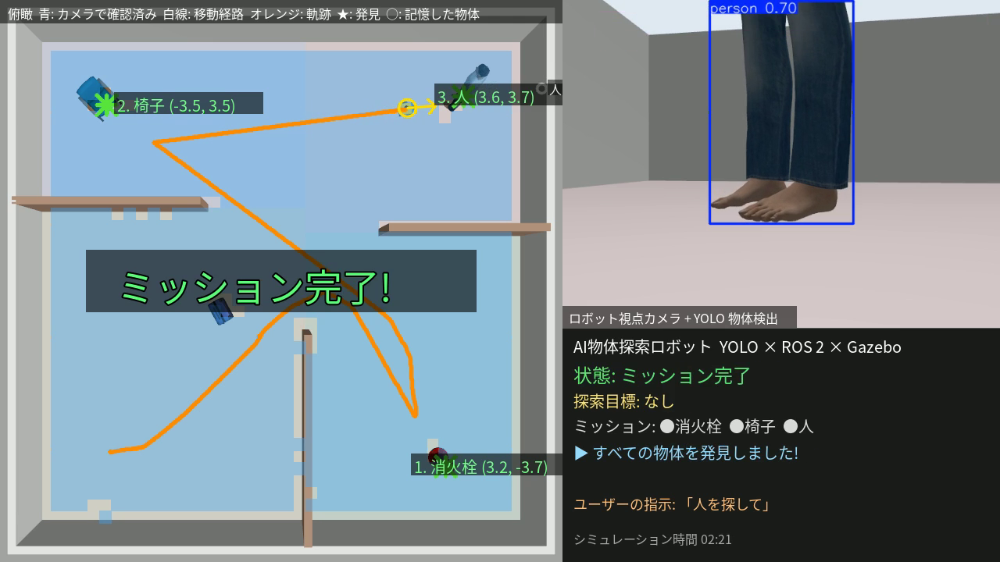
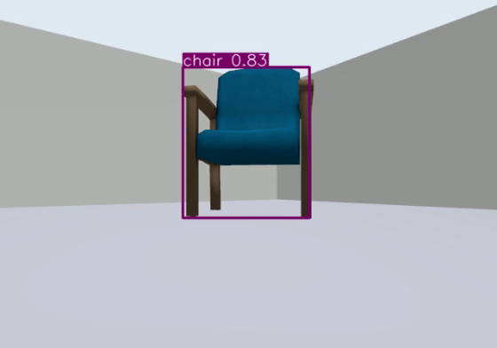
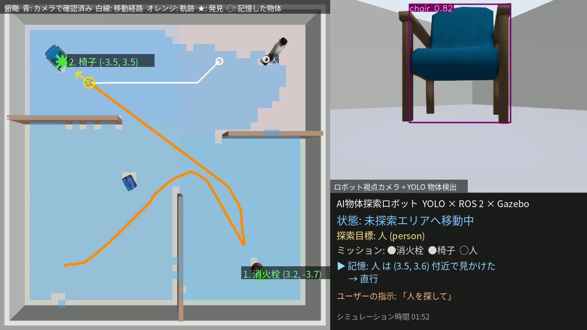

AI物体探索ロボット：YOLO × ROS 2 × Gazebo
Physical AI 応用1講座 最終課題 説明資料
課題名AI×ロボティクスによる創造的タスクの実現
タスク指定された物体を部屋の中から自律的に探し出し、近づいて、地図上の位置を記録する。見かけた物は記憶し、後から日本語で頼まれた物へ直行する
使用ツールROS 2 Jazzy / Gazebo Harmonic / Ultralytics YOLO11（推論のみ） / Python
ベース最終課題サンプル「gazeboとROS2を連携してロボットを操作する」（Qiita, 初級・おすすめ）
動画⟪YOUTUBE_URL⟫（約1分34秒、本編は2倍速）
コード⟪GITHUB_URL⟫
1. 概要と目的
家庭・オフィス・倉庫などで「〇〇はどこにある？」を確かめる作業は、人手がかかる割に単純です。
本課題では、カメラ画像をAI（YOLO）で推論して物体を認識し、指定された物体を自律的に探し回って位置を記録する移動ロボットを
シミュレーション上に実装しました。ユーザーは「消火栓と椅子を探して」のように探す物を指定するだけで、
ロボットは見えない物を探索し、見つけたら近づいて、その位置を地図上に記録します。
ベースのサンプルは「Gazebo上の差動二輪ロボットにROS 2からキーボードで速度指令を送る」ものでした。
本課題ではこれを出発点に、センサー（カメラ・LiDAR）の追加、AIによる認識、認識結果にもとづく自律行動まで発展させました。

図1 デモ動画の画面。左：俯瞰カメラ（オレンジ線が軌跡、★が発見した物体と推定位置）、右上：ロボット視点とYOLO検出結果、右下：状態表示
2. サンプルからの発展点
| ベースのサンプル | 本課題 |
|---|
| ロボット | SDFの差動二輪（DiffDriveプラグイン） | 同じ構成をもとに自作。前方RGBカメラ・360° LiDARを搭載 |
| 操作 | キーボードteleopのみ | YOLOによる自律探索。teleopも残し、mキーで手動⇔自動を切替 |
| AI | なし | YOLO11n（COCO 80クラス学習済み）で物体検出（推論のみ、CPU） |
| 行動 | キーに対応する速度を送るだけ | 回転探索 → 未探索方向へ移動 → 発見 → 視覚サーボで接近 → LiDARで停止 → 位置記録 → 次の目標 |
| 指示 | キー入力 | 日本語・英語の指示文（例：消火栓と椅子を探して、止まって） |
| ブリッジ | /cmd_vel のみ（yaml設定） | 同じyaml方式で /camera/image_raw /scan /odom /clock などを追加 |
| 出力 | なし | 発見した物体の位置（/search/found）、デモ動画の自動合成 |
3. システム構成
- yolo_detector：カメラ画像（640×480）をYOLO11nで推論し、
vision_msgs/Detection2DArray（クラス名・信頼度・枠）と枠を描いた画像を出力。CPUでの推論遅れが溜まらないよう、常に最新の1枚だけを処理。
- search_controller：検出結果・LiDAR・自己位置から行動を決める状態機械（4章）。指示文の受付、キーボード操作の割り込み、発見位置の記録も担当。
- keyboard_teleop：サンプルのteleopと同じ考え方（w/a/s/d）のキー操作。手動モード中はこちらが優先。
- demo_recorder：俯瞰カメラ・YOLO画像・状態を1画面に合成して動画に保存（提出動画はこれで作成）。
- 起動はlaunchファイル1本（サンプルと同じく、環境変数設定 → Gazebo起動 → yaml設定のブリッジ → 各ノード）。
4. AIの活用と行動の設計
4.1 物体検出（YOLO11、推論のみ）
COCOデータセットで学習済みのYOLO11を、そのまま推論に使いました（学習はしていません）。
COCOの80クラスに含まれる物なら探索目標にできます（人・椅子・消火栓・ボトル・テレビなど）。
モデルの選定のため、ロボットを椅子から1.5〜5 mの位置に置いて撮影した画像で、小型のnと一段大きいsを比較しました。
| 椅子までの距離・見る角度 | YOLO11n の信頼度 | YOLO11s の信頼度 |
|---|
| 1.5 m・30° | 0.83 | 0.63 |
| 1.5 m・60° | 0.89 | 0.61 |
| 3.0 m・20° | 0.93 | 0.91 |
| 3.0 m・45° | 0.92 | 0.81 |
| 5.0 m・10° | 0.87 | 0.91 |
| 5.0 m・30° | 0.79 | 0.91 |
| 1枚あたりの推論時間（CPU、単体） | 約 75 ms | 約 170 ms |
|---|
nモデルはどの距離でも信頼度0.79以上で検出でき、sより約2.3倍速かったため、YOLO11nを採用しました。
GPUなしの環境では、シミュレータの描画と同時に動かすと1枚あたり約200 ms（約5 Hz）でした。
4.2 探索・接近の流れ（状態機械）
- 記憶の確認：目標を以前に見かけていれば（4.3の意味地図）、その場所へ経路を計画して直行する。
- 回転探索：その場で360°回転しながらYOLOで目標を探す。候補が見えたら回転を遅くし、3フレーム連続で検出できたら「発見」とする（誤検出対策）。
- フロンティア探索：見つからなければ、カメラでまだ見ていない領域との境界（フロンティア）のうち最も近い所へ、地図上で計画した経路で移動し、再び回転探索する。
- 接近（視覚サーボ）：枠の横位置から目標の方位を計算し、比例制御で向きを合わせながら前進。向きのずれが大きいときは減速し、手前に障害物があれば回避する。
- 停止と位置の記録：目標までの距離が0.9 m以下になったら停止し、「ロボットの位置＋方位＋距離」から物体の地図上の位置を計算して記録する。
- 記録したら次の目標へ。すべて見つけたらミッション完了。その後も日本語の指示で新しい目標を探せる。
4.3 地図と記憶
- カメラで確認済みの地図：0.25 m四方の格子地図に、LiDARで分かる「通れる所／壁」と、カメラの視野（±37°、5 m以内）に入った所を記録します。
LiDARは360°見えますがYOLOが使うカメラは前方しか見えないため、「探した」の判定はカメラの視野で行うのがポイントです。
壁から0.5 m以内を通れない所として幅優先探索（BFS）で経路を計画します（計算は1回20 ms程度）。
- 意味地図（見かけた物の記憶）：YOLOが検出した物は、目標でなくてもすべて「クラス名＋地図上の位置」として記憶します（3回以上観測したものだけを採用）。
後から「人を探して」のように頼まれたとき、記憶にあれば探し回らずにその場所へ直行します。
4.4 工夫した点
- 推論遅延の補正：CPU推論は約0.2秒遅れるため、そのまま画像上の方位で制御すると回転中に行き過ぎます。そこで、画像を撮った時刻のロボットの向きを自己位置の履歴から引き、検出方位を地図座標の方位に変換してから制御しました。
- 2つの方法で距離を測る：検出した方位のLiDAR距離と、枠の下端（物体が床に接する点）とカメラの高さから計算した距離（地面拘束による単眼距離推定：距離 = カメラ高さ × 焦点距離 ÷ 画像中心から下端までの画素数）の小さい方を使います。
LiDARの走査面（高さ0.2 m）は椅子の細い脚の間を通り抜けてしまうことがあり、実際に椅子の手前で止まれない問題がありましたが、これで解決しました。
- 誤検出の防止：「1つの物体が2つのクラスになることはない」と考え、発見済みの物体から1 m以内の検出は他クラスとして扱わないようにしました（近距離の消火栓を「椅子」と誤認して到着扱いになる問題がありました）。
- 見失いへの対処：遠くの小さな物体は検出が途切れやすいため、見失っても4秒間は最後に見えた方向へ減速して進み続け、それでも見えなければ見えた側へ回転して探し直します。
- 目標の手前の障害物の回避：目標よりも近くに物がある場合は空いている側へよけます。よける動作は一定時間続け、「よける↔向き直る」の振動を防ぎました。
- 目標だけを追う／それ以外は覚えておく：人はスタート地点から見えていますが、最初のミッションの目標ではないので追いかけません。ただし位置は記憶しておき、後で「人を探して」と頼まれたときに直行します。
- 日本語の指示：
/search/command に「消火栓と椅子を探して」のような文を送ると、含まれる物体名（日本語・英語の別名に対応）を出現順に読み取り、目標リストを入れ替えます。「止まって」「手動」「自動」にも対応。
- 見せ方：俯瞰カメラと軌跡、YOLOの検出画像、状態・目標リスト・発見位置を1画面にまとめて動画化しました。CPUが重いときにコマが抜けても、動画の時間がシミュレーション時間と一致するようにしています（2倍速表示を正確にするため）。
5. 結果
10 m × 10 m の部屋を間仕切りで4つのエリアに分け、消火栓 → 椅子の順に探すミッションを実行し、
完了後に日本語で「人を探して」と指示しました。消火栓と椅子はスタート地点（南西のエリア）からは壁で見えない位置にあり、
人は途中で何度も視界に入る位置（北東）にあります。
| 目標 | 発見までの時間 | 推定位置 [m] | 真値 [m] | 誤差 | どう見つけたか |
|---|
| 1. 消火栓 | 58 秒 | (3.24, −3.66) | (3.2, −3.6) | 0.07 m | フロンティア探索で2回移動して発見 |
| 2. 椅子 | 103 秒 | (−3.45, 3.49) | (−3.6, 3.6) | 0.19 m | フロンティア探索で1回移動して発見 |
| 3. 人（指示） | 133 秒 | (3.59, 3.66) | (3.6, 3.6) | 0.06 m | 指示を受け記憶から直行（約21秒） |
時間はシミュレーション時間（ミッション開始から）。真値はワールドファイルでの物体の配置位置。動画は同じ試行を2倍速で再生しています。
改良後の構成で行った4回の試行では、4回とも消火栓と椅子を発見しました（消火栓 57〜58秒、椅子 103〜104秒）。
人は、3つ目の目標として探した回も、完了後の指示で探した回も、記憶から直行して見つけました（126〜133秒）。
推定位置の誤差はすべて0.2 m以内でした。

図2 ロボット視点の画像とYOLOの検出結果（椅子 0.83）

図3 「人を探して」の指示直後。記憶した人の位置（○）へ経路（白線）を計画して直行
6. 試行錯誤の記録
| 問題 | 原因 | 対策 |
|---|
| 物体の推定位置が後になるほどずれる（0.2 → 0.6 m） | 車輪オドメトリの誤差が蓄積 | 自己位置にシミュレータの真値を使用（実機ではSLAM/AMCLに相当） |
| 同じ場所ばかり探して人が見つからない | 「通った地点から遠い方向」を選ぶだけで、カメラで見た範囲を考えていなかった | カメラの視野で作る地図＋フロンティア探索 |
| 2回目以降の経路計画が失敗 | ブレーキ時に車体が前傾し、LiDARが床を障害物として検出 | 前輪キャスターの追加、複数回観測した所だけを障害物とする |
| 椅子の手前で止まらない | LiDARの走査面が椅子の脚の間を通過 | 枠の下端から計算する単眼距離を併用 |
| 消火栓を「椅子」と誤認 | 近距離で物体の一部だけが写ると誤分類 | 発見済み物体の周囲1 mの検出を除外 |
| 動画の再生速度が不正確 | CPUが重いと録画のコマが抜ける | 抜けたコマを複製し、動画の時間＝シミュレーション時間に |
7. 考察と今後の課題
- 自己位置推定：今回は簡単化のため、自己位置にシミュレータの真値を使いました（実機ではSLAMやAMCLに置き換える部分です）。
車輪オドメトリだけを使った試行では、4分ほどの走行で物体の推定位置の誤差が0.2 mから0.5〜0.6 mに増えました。
前輪キャスターを追加して車体の前傾を防いだ後は、約2分の走行でのオドメトリのずれは0.1〜0.2 mに減りましたが、時間とともに増えることに変わりはありません。実機では自己位置推定が不可欠です。
- 探索の効率：フロンティア探索により無駄な往復は減りましたが、毎回360°回転するため時間がかかります。カメラの視野が未確認の方向だけを向く回転や、複数のカメラの利用で短縮できます。
- 認識の限界：COCOの80クラス以外の物は探せません。YOLO-Worldのようなオープン語彙の検出器や、LLMと組み合わせれば「赤いマグカップ」のような自由な言葉で探せるようになります。また、遠くの小さな物体は検出が途切れやすく、接近中に見失う場面がありました。
- 実機への展開：ROS 2のトピック構成（
/camera/image_raw /scan /cmd_vel）はTurtleBotなど一般的な移動ロボットと同じなので、ノードはほぼそのまま実機で使えます。GPUがあれば推論は30 fps程度になり、反応も速くなります。
8. 自分で追加した改良：手動操作のタイムアウト
8.1 問題点
手動モードでは、tick() が最後に届いたコマンドを使い続けていた。そのため、キーボードのノードが止まると、ロボットはそのまま走り続け、壁にぶつかって壊れる恐れがあった。
8.2 解決方法
- 送る側：キーが押されていなくても、今のコマンドを約0.1秒ごとに送り続けるようにした
- 受け取る側：最後にコマンドを受け取った時刻を記録し、判定でその間隔が0.5秒を上回った時のみ止めるようにした
- 受け取る側だけを直すと、キーを1回押しても0.5秒で止まってしまうので、送る側も変える必要があった
- テストでは、コマンドを送っている間は動き続け、送るのを止めると約0.5秒で停止することを確認した
8.3 学んだこと
安全のための機能は、送る側と受け取る側の両方を合わせて設計する必要がある。設計を誤ると危険な動作になるという事を学んだ。
9. 実行方法
colcon build 後、ros2 launch yolo_search_robot yolo_search.launch.py（GUI付き）。
GUIなしで録画する場合は headless:=true record:=true。キーボード操作は teleop:=true。
詳細はリポジトリのREADMEを参照。Ubuntu 24.04 / ROS 2 Jazzy / Gazebo Harmonic（GPUなし）で動作を確認しました。
物体の3Dモデルは Gazebo Fuel（OpenRobotics）のものを使用しています。
10. AIの利用について
本課題では、生成AI（Claude）を利用した。コードの作成、デバッグ、シミュレーションの実行、動画やレポートの作成はAIが行った。私は、AIの解説で仕組みを理解し、手動操作のタイムアウトを、AIのヒントを受けながら自分で考えて実装し、8章を書いた。